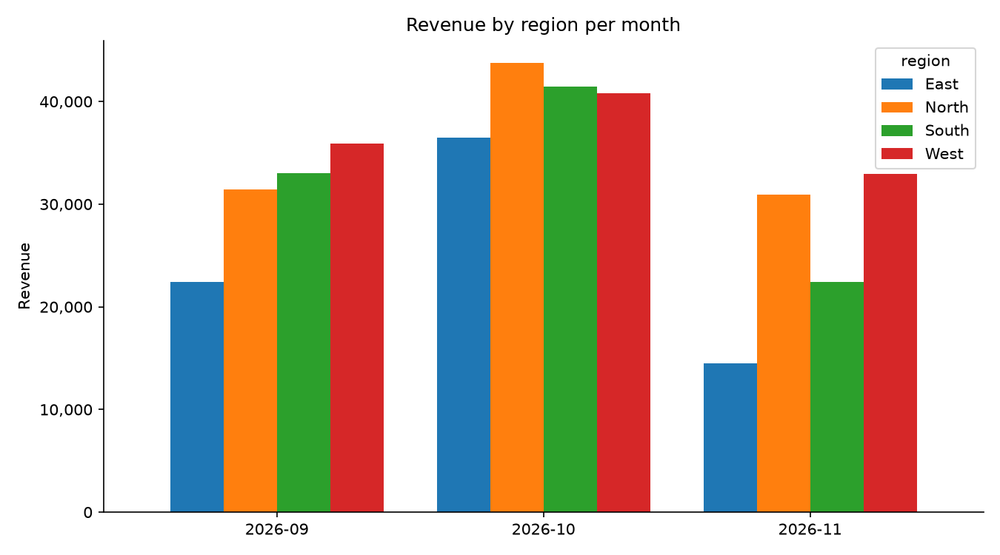

Sales performance report
Period: 01 Sep 2026 to 18 Nov 2026 · Generated 24 Nov 2026 19:39 · Source: sales.csv
Summary
- Total revenue reached $386,113.86 across 277 units from Sep 1 to Nov 18, 2026, driven primarily by Audit Pro at $176,377.67.
- The most severe risk is a widespread MoM contraction, led by the East region's sharp drop of -60.3% to a period low of $73,395.05.
- Target sales recovery efforts on the East region to reverse its -60.3% decline and bolster underperforming product segments such as Training ($42,593.68).

Revenue by region
| West | 109,666 |
| North | 106,152 |
| South | 96,901 |
| East | 73,395 |